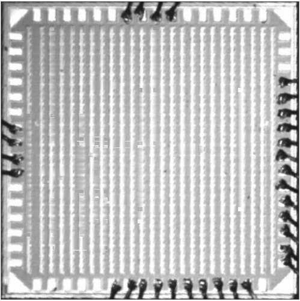
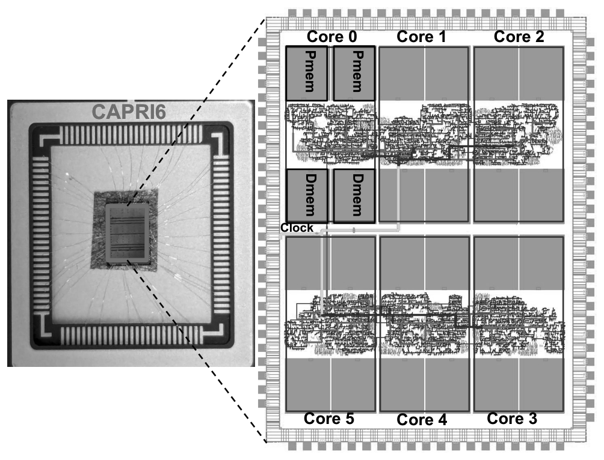
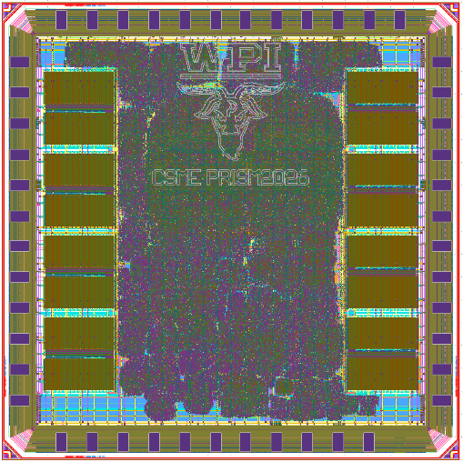
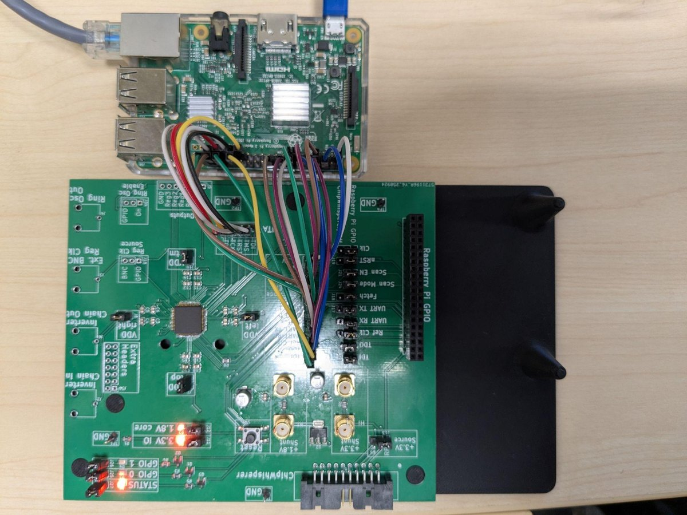
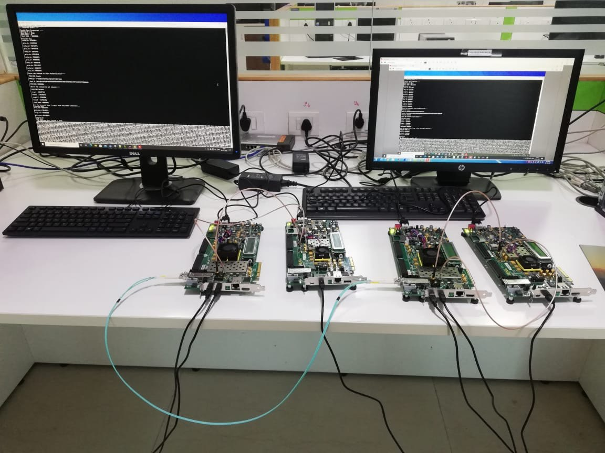
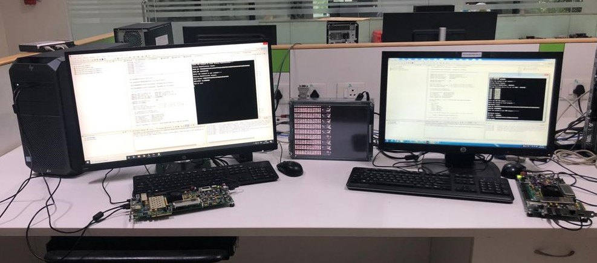

Hardware I designed, built and measured: three ASIC test chips from my PhD at WPI, and three FPGA systems.

Single-processor RISC-V test chip for electromagnetic fault characterization, with a scan chain to read the internal state after each fault.

Six openMSP430 cores in lockstep with a full scan chain, so the complete state of every core can be read out after a fault.

Open-source PQC reference chip: ML-KEM, ML-DSA, SLH-DSA and HQC accelerators, each unprotected and masked on the same die. Layout view; taped out September 2026.
More on these chips: Prof. Patrick Schaumont's artifacts page.

A quantum key distribution link delivers raw bits with errors in them. The key distillation engine (KDE) turns those bits into a shared secret key: authentication, sifting, parameter estimation, LDPC error correction and privacy amplification. This KDE comes from the MAQAN project at SETS, Chennai, where I was Co-PI. Each stage is an IP core on an AXI bus under a MicroBlaze processor on a Kintex-7 KC705 board. The Alice and Bob boards exchange the classical-channel data over optical fibre with the Aurora protocol.

Related: Scalable QKD Postprocessing System with Reconfigurable Hardware Accelerator (IEEE Trans. Quantum Eng. 2023) · KDE-QKD workshop, 2021
Poly1305-AES authenticates the classical channel of a QKD link. The tag is MAC = Hr(m) + AESk(n), and the hash Hr(m) is computed with Horner's rule, so the secret r is multiplied in again for every message block. That repeated multiplication leaks through the power consumption of the device.
The attack has two steps. First, power analysis on the authentication module recovers r. Second, a Celoxica FPGA board placed on the LAN between the two hosts intercepts a message and its tag. The board is a transparent box: it has no IP address, so neither host can see it, and it processes each packet in parallel FPGA logic, so the packets pass with near-zero delay. Its TFT screen displays the traffic as it passes. It computes Hr(m), subtracts it to get AESk(n), and sends on a different message with a valid tag. The countermeasure derives a fresh r for every authentication with a Toeplitz-matrix universal hash, so there is no fixed r to measure.

Related: Robust Message Authentication in the Context of Quantum Key Distribution (IJICS 2022)
The DMM sits inline on the network path, in front of the servers it protects. It learns what normal traffic looks like, flags windows of packets that deviate from it, and then passes only white-listed traffic. Detection uses a Naive Bayes classifier over packet header fields such as the TCP flags. Training runs offline in software, and detection runs online in hardware, which is designed to keep up with the line rate.
Three hardware modules sit on the wire: traffic capture (TCM), detection (DM) and mitigation (MM). I designed the FPGA logic in Handel-C on Celoxica boards. A control unit on a PC configures the traffic streams, computes the statistics during learning, and loads the white list. The system covers services over TCP, UDP and ICMP and was tested on the DARPA dataset and on SETS traffic.
Related: Denial of Service Detection System on Various Platforms (IEEE ICCST 2019) · Efficient Packet Capturing for DDoS on FPGA, QUT